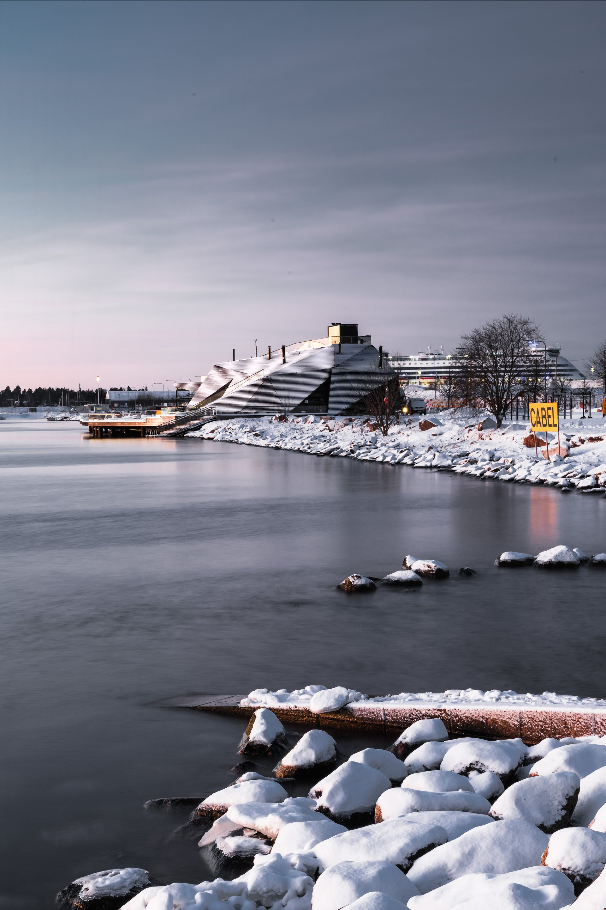
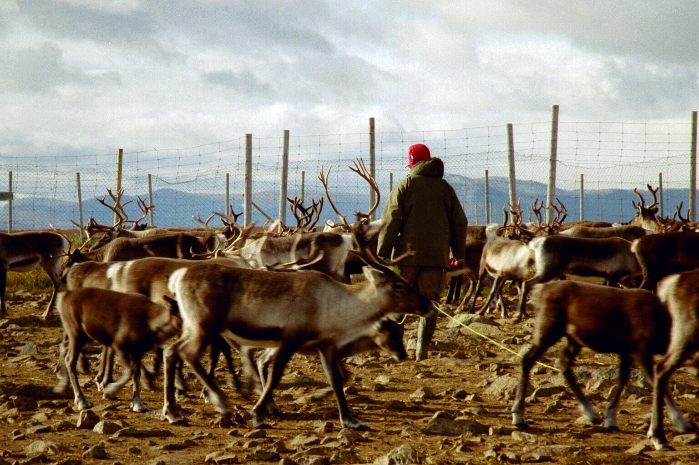
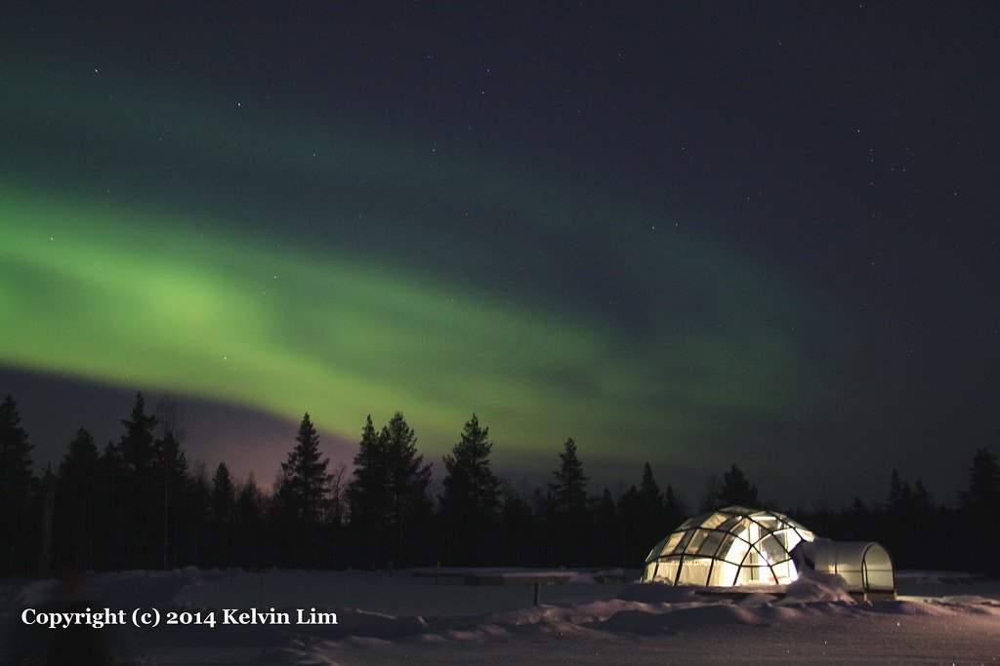
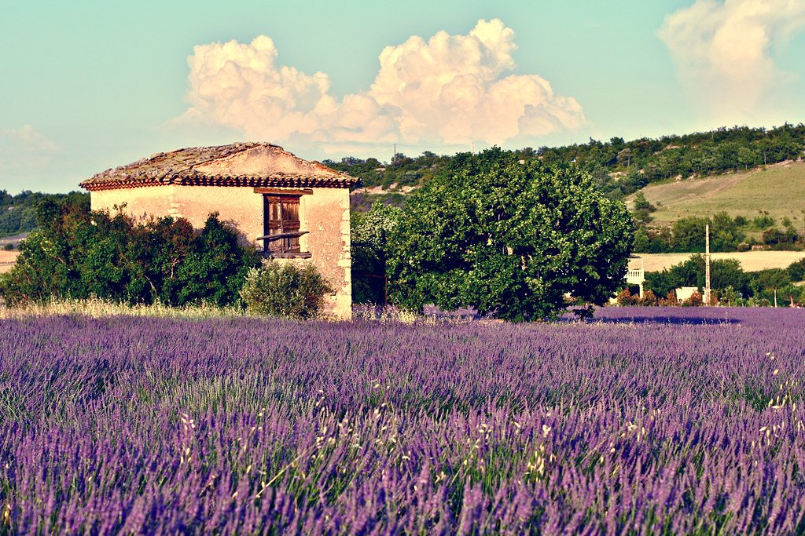

Día 1 · Helsinki
Llegada a Helsinki
Caminata por el design district (Marimekko, Iittala, Artek). Sauna ritual en Löyly. Cena en Olo (1 Michelin).


Auroras Boreales y el Reino Sami · Edición enero 2027
Ver fechas y preciosLaponia es la exacta inversa del desierto: oscuridad de 20 horas en enero, frío que se mete en los huesos, y un cielo que de repente se enciende en cintas verdes y violetas. La aurora boreal —Revontulet en finlandés, los zorros de fuego— está en pico de actividad solar. Pero la profundidad del viaje no es la aurora — es el pueblo Sami, la única población indígena reconocida por la Unión Europea, con su propia bandera, su parlamento (en Inari), nueve lenguas y un sistema cosmológico basado en una relación con el reno.
Cruzamos dos países —Finlandia y Noruega— y dos paisajes: el bosque boreal de la Laponia finlandesa, y el fiordo ártico noruego del Lyngenfjord. En el medio: cabaña de cristal sobre lago helado, familia de pastores de renos Sami en Inari, ritual sauna y plunge en lago helado, husky sledding, y la ciencia de las auroras explicada por un investigador del Observatorio Geofísico de Sodankylä.

Dormís bajo el cielo polar, la aurora viene a buscarte a la cama. Dos noches en Ivalo.
Encuentro real (no folclórico) con familia en Inari, conversación con intérprete, joik si la familia lo ofrece.
El centro espiritual de la cultura finlandesa: vapor, vihta de abedul, salto al lago a -25C, repetir tres veces.
Caminata por el design district (Marimekko, Iittala, Artek). Sauna ritual en Löyly. Cena en Olo (1 Michelin).

Vuelo a Ivalo (1h 50). Cena Sami tradicional en Wilderness Hotel Inari, propiedad de familia Sami.

SIIDA Museum con guía Sami. Visita a familia de pastores de renos. Aurora chase nocturna en motoreneves.
Cabañas de cristal. Husky sledding bosque boreal. Ice fishing. Snowshoes con naturalista. Sesión científica auroras con Sodankylä Observatory. Ritual sauna completo.

Vuelo vía Oslo. Caminata Arctic Cathedral (Ishavskatedralen) y Polar Museum (Amundsen, Nansen). Cena en Smak.
Opcional avistamiento orcas y jorobadas (noviembre-enero peak season). Traslado 2h a Lyngen Lodge — boutique de 9 suites frente al fiordo.

Opciones: ski touring en Lyngen Alps con guía UIAGM / navegación a comunidad Sea Sami / sauna y jacuzzi contemplativo.
Trineos por el valle Lyngen al fondo de las montañas. Almuerzo al fuego en gamme. Cena de despedida con lectura de Hamsun.
Traslado 2h a Tromsø aeropuerto. Vuelos internacionales.
Sumá días al final del viaje, con salidas privadas.

El hotel de hielo original en Suecia, una noche en habitación esculpida y otra en cabin caliente.
Las islas dramáticas del norte noruego — luz invernal singular, rorbu (cabañas de pescadores), aurora.

Pre-trip cultural: ferry rápido a la capital estonia, casco medieval UNESCO.
| Salida | Disponibilidad | Precio desde | |
|---|---|---|---|
| 8 ene 2027 | Abierta | $10,800 | Reservar → |
| 15 ene 2027 | Pocas plazas | $10,800 | Reservar → |
| 22 ene 2027 | Abierta | $10,800 | Reservar → |
| 29 ene 2027 | Lista de espera | $10,800 | Reservar → |
| 5 feb 2027 | Abierta | $11,200 | Reservar → |
Precios por persona en habitación doble. Suplemento de habitación individual a consultar.